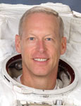

Lyndon B. Johnson Space Center
Houston, Texas 77058
|
National Aeronautics and Space Administration Lyndon B. Johnson Space Center Houston, Texas 77058 |
 |
Biographical Data |
||
Patrick G. Forrester (Colonel, U.S. Army, retired)
NASA Astronaut
PERSONAL DATA: Born March 31, 1957 in El Paso, Texas. Married to the former Diana Lynn Morris of Springfield, Virginia. They have two children. He enjoys baseball and running. Pat’s mother, Patsy L. Forrester, resides in Houston, TX. His father, Colonel (ret.) Redmond V. Forrester is deceased. Diana’s father, Colonel (ret.) Lurie J. Morris, resides in Hendersonville, North Carolina. Her mother, Bettye Morris, is deceased.
EDUCATION: Graduated from West Springfield High School, Springfield, Virginia, in 1975; received a Bachelor of Science Degree in Applied Sciences and Engineering from the United States Military Academy, West Point, New York, in 1979, and a Master of Science Degree in Mechanical and Aerospace Engineering from the University of Virginia in 1989.
AWARDS: Defense Superior Service Medal; Legion of Merit; Meritorious Service Medal (2nd Oak Leaf Cluster); Army Commendation Medal; Army Achievement Medal; National Defense Service Medal; Senior Air Force Space Badge; Expert Infantryman Badge.
SPECIAL HONORS: U.S. Army Aviation Hall of Fame (2011), Jack Northrop Award, Society of Experimental Test Pilots (1996); NASA Exceptional Service Medal (2008, 2010); NASA Space Flight Medal (2001, 2007, 2009); Order of St. Michael (Bronze 2001, Silver 2007); Lyndon B. Johnson Space Center Certificate of Commendation (1995).
EXPERIENCE: Forrester graduated from West Point in June 1979 and was commissioned as a Second Lieutenant in the U.S. Army. He entered the U.S. Army Aviation School in 1979 and was designated an Army Aviator in September 1980. He was subsequently assigned as an Instructor Pilot at the Aviation School and as the Aide-de-Camp to the Deputy Commanding General of the U.S. Army Aviation Center. In 1984, he was assigned to the 25th Infantry Division (Light), Schofield Barracks, Hawaii, where he served as a Platoon Leader, Aviation Company Operations Officer, and an Assault Helicopter Battalion Operations Officer. After completing a Master of Science Degree at the University of Virginia in 1989, he was assigned as a Flight Test Engineer and as the Research and Development Coordinator with the Army Aviation Engineering Flight Activity at Edwards Air Force Base, California. In June 1992, he graduated from the U.S. Naval Test Pilot School and was designated an Experimental Test Pilot. In 1992, he was assigned as an Engineering Test Pilot at the U.S. Army Aviation Technical Test Center, Fort Rucker, Alabama. Other military schools include the Army Parachutist Course, U.S. Army Ranger School, the Combined Arms Services Staff School, and the Command and General Staff College.
A Master Army Aviator, he has logged more than 5,000 hours in over 50 different aircraft.
Forrester retired from the Army in October 2005.
NASA EXPERIENCE: Forrester was assigned to NASA at the Johnson Space Center as an Aerospace Engineer in July 1993. His technical assignments within the Astronaut Office Operations Development Branch have included: flight software testing with the Shuttle Avionics Integration Laboratory (SAIL); Astronaut Office Representative for Landing/Rollout issues, Multi function Electronic Display System (MEDS) upgrade of the orbiter fleet and the Portable In-flight Landing Operations Trainer (PILOT). He has also served as the crew representative for robotics development for the International Space Station.
Forrester was selected as a Mission Specialist Astronaut Candidate by NASA in May 1996. He completed two years of training and evaluation and was qualified for flight assignment as a Mission Specialist. Initially, Forrester was assigned to duties at the Kennedy Space Center as a member of the Astronaut Support Team, responsible for shuttle prelaunch vehicle checkout, crew ingress and strap-in and crew egress after landing. He next served as the Technical Assistant to the Director, Flight Crew Operations. Following that, Forrester served as the Shuttle Training and Onboard Crew Procedures Representative. He has also served as a Capsule Communicator (CAPCOM) for both International Space Station and shuttle missions. Forrester flew on STS-105 (2001), STS-117 (2007) and STS 128 (2009). He has logged more than 950 hours in space, including four spacewalks, totaling 25 hours and 22 minutes of EVA time.
SPACEFLIGHT EXPERIENCE: STS-105 Discovery (August 10 to August 22, 2001) was the 11th mission to the International Space Station. While at the orbital outpost, the STS-105 crew delivered the Expedition 3 crew, attached the Leonardo Multi-Purpose Logistics Module (MPLM) and transferred more than 2.7 metric tons of supplies and equipment to the station. During the mission, Pat Forrester and Dan Barry performed two spacewalks totaling 11 hours and 45 minutes of EVA time. Forrester served as the prime robotics operator to install the MPLM. STS-105 also brought home the Expedition 2 crew. The STS-105 mission was accomplished in 186 orbits of the Earth, traveling more than 4.9 million miles in 285 hours and 13 minutes.
STS-117 Atlantis (June 8 to June 22, 2007) was the 118th shuttle mission and the 21st mission to visit the International Space Station, delivering the second starboard truss segment, the third set of U.S. solar arrays and batteries and associated equipment. The successful construction and repair mission involved four spacewalks by two teams. Forrester accumulated 13 hours and 37 minutes of EVA time in two spacewalks. The mission also delivered and returned with an expedition crewmember. STS-117 returned to land at Edwards Air Force Base, California, having traveled 5.8 million miles in 14 days.
STS-128 Discovery (August 28 to September 11, 2009) was the 128th shuttle mission and the 30th mission to the International Space Station. While at the orbital outpost, the STS-128 crew rotated an expedition crewmember, attached the Leonardo MPLM and transferred more than 18,000 pounds of supplies and equipment to the space station. The STS-128 crew conducted three spacewalks. Forrester served as the prime robotics operator for Discovery. The STS-128 mission was accomplished in 217 orbits of the Earth, traveling more than 5.7 million miles in 332 hours and 53 minutes and returned to land at Edwards Air Force Base, California.
MARCH 2015